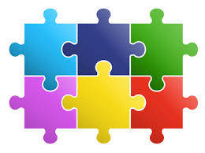

Today's date:
Game based learning is also an active learning technique where games are used to enhance student learning. Here, the learning comes from playing the game and promotes critical thinking and problem solving skills. Name based learning can be accomplished with digital or non-digital games and may include simulations that can allow students to experience the learning firsthand.
Many teachers struggle to smoothly incorporate games into lessons due to time and logistical issues, yet see game-based learning (GBL) as a way to engage students and appeal to diverse learning styles. Research has continuously shown such advantages. For example, video games stimulate an increase in midbrain dopamine to help store and recall information, according to a 2014 article in the journal of Learning, Media and Technology. But when admins and teachers don’t seamlessly introduce a game, students may be slow to adopt it and reap these benefits. Here are five steps to integrating game-based learning into your classroom:
1. Determine the Purpose of Game-Based Learning Deciding how you’ll use a game will narrow your search, helping you find an appropriate one. Before researching, determine if you want to use a game for:
Intervention -- If a student is struggling to demonstrate understanding of core material, you may consider using a game to address his or her trouble spots. The game you choose should therefore deliver content that adjusts itself to player knowledge and learning style. This should help the student gain a better understanding of difficult material. Enrichment -- As students master core material, you may want a game that presents content through different media. For example, it may give questions through text, audio, images and more. This should encourage students to challenge themselves as they explore new ways to process the content. Reinforcement -- Instead of using games to teach and engage individual students, entire classes can play to reinforce curriculum content. This can also make game-based learning a group activity. Some games have multiplayer features and students may naturally compete against each other to earn higher scores. Keeping these factors in mind will likely hasten the process of finding a game that meets both teacher and student needs.
2. Play the Game Yourself, Making Sure It Is Aligned with Learning Goals null Playing the game in question will help you determine if it’s aligned with learning goals you’ve set. After finding a game you think is appropriate, play it and make note of: Teacher Control -- Many educational games offer teachers the ability to control content and adjust settings for individual students. For example, some let you match questions to in-class material, delivering them to specific players. Intuitiveness -- Whether it’s a physical or video game, it should be easy to use. Students should challenge themselves by processing and demonstrating knowledge of the content -- not by stressing over how the game works. Engagement -- Based on the content and how it’s presented, determine if students will enjoy the game. If it’s engaging, students should inherently want to play and, as a result, learn. Content Types -- To accommodate diverse learning styles, the game should offer different types of content. For example, an educational math video game may present questions as graphs, numbers and word problems. Content Levels -- To address diverse trouble spots and aptitudes, the game should use differentiated instruction principles to adapt content to each player. For example, a language video game may focus more on pronouns with one student than another. Paying attention to these criteria while playing should help you decide if the game properly supports learning goals.
3. Ensure It Meets Expectations from Parents null
Getting buy-in from other teachers or admins may
be needed before finalizing your game selection, but parents should also know about your game-based learning plans. This opens the door to parent participation which, according to oft-cited research from the National Committee for Citizens in Education, is one of the most accurate predictors of student success: The family makes critical contributions to student achievement, from earliest childhood through high school … When schools engage parents and students, there are significant effects. When parents are involved at school, not just at home, children do better in school and they stay in school longer. What’s more, you probably don’t want kids telling unaware parents they played an hour of games in class. They may not think of games with educational value. Sending a letter home, explaining the game’s benefits and possibly providing your email address, may alleviate these concerns. Here’s a letter that Prodigy offers to teachers who sign up for our math game. Providing this sort of clear communication should smooth the implementation process from both a teacher and administrative perspective.
4. Dedicate Time to Consistent In-Class Play Sporadic game-based learning may not allow students to reach learning goals as effectively as consistent, scheduled play time. What’s more, it may not be as engaging as possible. For example, a study published in the journal of Educational Technology and Society found a positive correlation between a structured 40-minute period of educational game play and not only faster recall processes, but improved problem-solving skills. In a classroom with 1:1 device use, make time for game-based learning activities by: Including game time as a designated activity in your lesson plan, not an afterthought Using a game as an entry ticket, drawing student attention to the lesson’s topic Using a game as an exit ticket, allowing students to reflect In a classroom with limited device use, make time for game-based learning activities by: Focusing more on non-digital games, such as board games with educational value Creating learning stations, one of which is playing a device-based game Playing team games, letting students play in pairs or groups These options should make it easier to designate time for educational play, seamlessly incorporating game-based instruction into class.
5. Assess Progress Throughout Play, Informing Instruction null
Collecting data from the games you implement can uncover student trouble spots and aptitudes, helping you shape in-class instruction. Data collection will vary depending on the purpose and nature of a game in question. Usually, it involves a following method: In-Game Reports -- Some educational video games feature in-game reports for teachers, which record student performance. For example, charts will contain each player’s marks for a series of questions, letting you click to see more details. Self-Reports -- For physical games, or video games without reporting features, you can encourage students to take ownership of their progress through self-reporting. Create a Google Forms spreadsheet for each student. Then, ask them to provide updates. Class Discussions -- After playing team games, conducting a class-wide discussion allows each group to share difficulties, progress and accomplishments. This final step of incorporating game-based learning will give you the information needed to adjust lessons and activities, addressing trouble spots and building on new knowledge
Infographic Created by Instructional Designer, here's an infographic that summarizes the five steps to introducing and using game-based learning in your class:
Chess:board game of strategic skill for two players, played on a chequered board on which each playing piece is moved according to precise rules. The object is to put the opponent's king under a direct attack from which escape is impossible ( checkmate ).
Benefits of using chess in the classroom
1) Develops Logic, Critical Thinking, and Creativity. ...
2) Increases Concentration & Memory. ...
3) Develops Problem Solving Skills. ...
4) Improves Reading Skills. ...
5) Teaches Planning and Foresight. ...
6) Engages the mind OFF of screens. ...
7) Connects You with Others.
Puzzles
This creative group game encourages students to work together and visualize academic concepts in an abstract way. Resources: images, words, calculations, or concepts printed or stuck on card/paper and cut into random shapes (puzzle pieces) e.g. maths calculations, chemical equations, subject vocabulary, historical figures, etc. Game: Separate your class into groups (or simply use table groupings) then hand out a puzzle for each group to piece together. Alternative: Students can create their own puzzles on the computer or draw onto cards/paper for their peers to complete. Draw swords This quick-fire game tests students’ fine motor skills and promotes quick thinking, as well as generating some healthy competition.